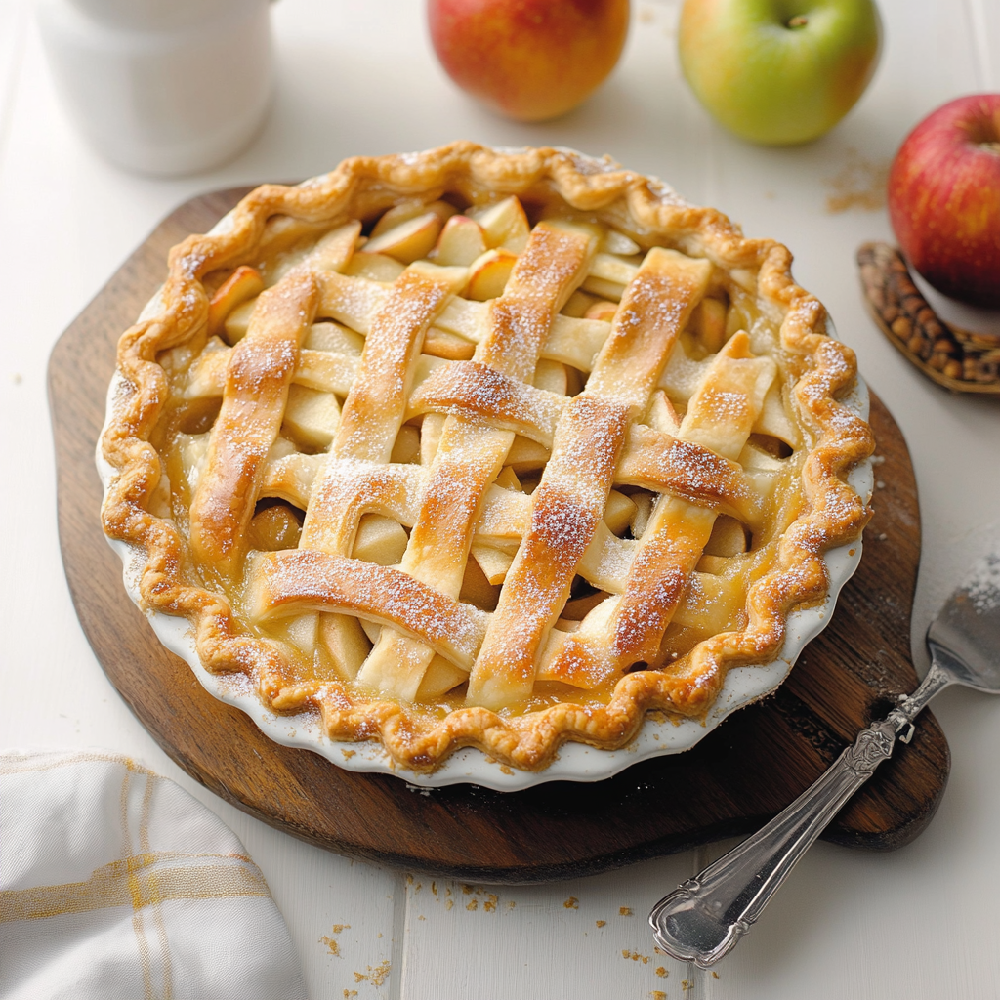

Home
Apple Pie

A buttery, flaky apple pie filled with tender apples, brown sugar, and warm spices. The filling is cooked beforehand for a thick, juicy center and baked beneath a golden crust.
Ingredients
- Dough for bottom and top pie crusts, homemade or store-bought
- 8 cups peeled, sliced tart apples (about 2½ pounds)
- 3 tablespoons unsalted butter
- 1¼ cups light brown sugar
- 1½ teaspoons ground cinnamon
- ¼ teaspoon ground nutmeg
- ¼ teaspoon ground cloves
- ½ teaspoon kosher salt
- 1 tablespoon lemon juice
- 1 teaspoon vanilla extract
- 2 tablespoons cornstarch
- 2 tablespoons cold water
- 1 beaten egg, for brushing
- Optional: granulated sugar for topping
Steps
- Slice apples ¼-inch thick. Melt butter over medium heat; add apples and cook 5 minutes.
- Add brown sugar, spices, salt, lemon juice, and vanilla. Cook another 10–15 minutes until tender.
- Mix cornstarch with cold water; stir into apples until thickened. Cool to room temperature, approximately 1–2 hours.
- Line your pie pan with rolled-out dough. Add filling, cover with a lattice crust, and crimp edges.
- Refrigerate 20 minutes. Preheat oven to 425°F.
- Brush with beaten egg; optionally sprinkle sugar.
- Bake 20 minutes, then reduce to 375°F for 30–40 minutes, until golden and bubbling. Shield browning edges with foil.
- Cool completely before slicing.